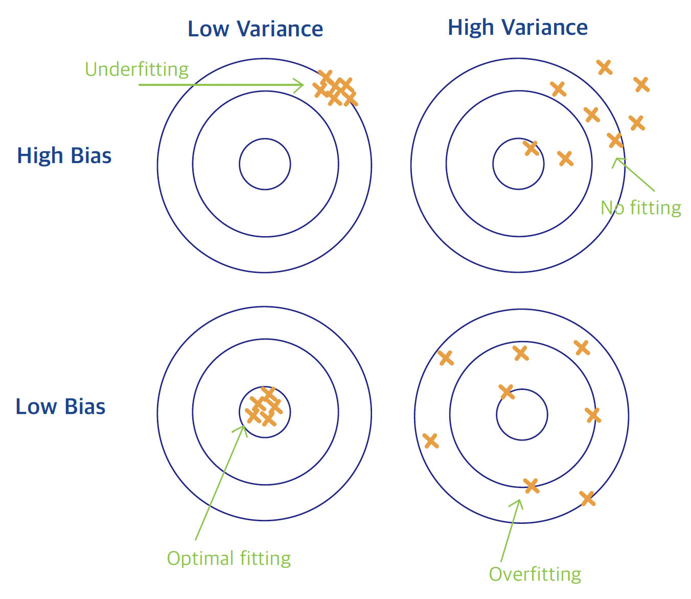

Chapter 1 Week 1 Introduction to Statistical Learning
1.1 What do we mean by Statistical Learning?
We learn from data:
\(\rightarrow\) outcome/measurement (quantitative or categorical) \(\rightarrow\) predict based on a set of features
A prediction model, or learner enables us to predict the outcome for new unseen objects.
1.2 Types of Statistical Learning
Supervised Learning: when an outcome variable is present to guide the learning process.
- Regression: Response is quantitative, i.e. a number.
- Classification: Response is qualitative, i.e. categorical, discrete, or a factor – a label (binary or multi-class).
Unsupervised Learning: when an outcome variable is not present.
Identify latent structures in the data, e.g. clustering, association rules, HMM, etc.
1.3 Statistical Learning Examples
Birthweight (Regression)

Scatterplot matrix of the birthweight data. The first row shows
the response against each of the predictors in turn. Three of the predictors, smoker, lowbwt, and mage35 are categorical.
Trees and Shrubs (Binary Classification)}
| Name | Height | Diameter | GrowthRate | Longevity |
|---|---|---|---|---|
| Silver Fir | 55.0 | 1.50 | 0.5 | 500 |
| European Beech | 40.0 | 1.00 | 0.5 | 200 |
| Common Hazel | 5.0 | 0.10 | 0.5 | 70 |
| Red Raspberry | 1.5 | 0.01 | 0.4 | 10 |
| European Spruce | 50.0 | 1.20 | 0.5 | 600 |
Species of Woody Plants common in the Black Forest region in Southwestern Germany (Ref: Lederer)
Handiwritten Digits (Multiclass Classification)}
Handwritten Digits from U.S. postal envelopes (Ref: ESL)
Proteomics Data (Clustering)}
Proteomics Data: Expression matrix of 437 proteins only 101 proteins of interest are shown. The display is a map of missing values: red for present/ grey for missing. (Ref: Romanova et al. – STAT 427 dataset)
1.3.1 Supervised Learning Setup
Framework
Objective Function to be minimized: \[F(w) = \sum_{i=1}^{n} loss\Bigl( y_i, f\bigl( x_i; w\bigr)\Bigr)\]
Loss Function Examples \[\begin{align*} loss &= \Bigl[ y_i - f\bigl(x_i; w \bigr)\Bigr]^2\\ loss &= \mathbf{1}_{ \left \{ y_i \neq f\bigl(x_i; w \bigr) \right\} } = \begin{cases} & 1, \,\, \text{ if } y_i \neq f\bigl(x_i; w \bigr) \\ & 0,\,\, \text{ if } y_i = f\bigl(x_i; w \bigr) \end{cases} \\ loss &= \begin{cases} &-\log f \bigl(x_i; w \bigr), \,\, \text{ if } y_i=1\\ &-\log \Bigl(1- f\bigl(x_i; w \bigr) \Bigr),\,\, \text{ if } y_i=0 \end{cases} \end{align*}\]
- The minimizer \(w^*\) may or may not be in closed form.
Challenges Learning is difficult because
- the training error underestimates the test/generalization error.
- model performance might be good for training data, but poor for future data (overfitting).
- the number of parameters in the regression/
- classification function \(f\), denoted by \(p\), that is the number of
- parameters we need to learn from the data, might be large.
- the testing error increases significantly when the number of model parameters, \(p\), becomes larger.
Curse of Dimensionality
In Classification…
One-nearest-neighbor predicts perfectly on the training data, but poorly on testing data.
An interesting illustration on how dimensionality changes the performance of linear classifiers can be found here: https://www.visiondummy.com/2014/04/curse-dimensionality-affect-classification/
In Regression…
Response vector: \(y_{n\times 1}\), where \(n\) is the sample size. Design matrix (i.e. matrix of predictors): \(\mathbf{X}_{n\times p}\), where \(p\) is the number of predictors.
Regression model \[y_{n\times 1} = X_{n\times p} \, \textcolor{blue}{w_{p\times 1}}\] where \(w_{p\times 1}\) are the model coefficients (i.e. parameters to estimate).
\[y_{n\times 1} = X_{n\times p} \, \textcolor{blue}{w_{p\times 1}}\] where \(w_{p\times 1}\) are the model coefficients.
\(p<n\): Typically when regression methods are used and are successful, since we have \(n\) (more) equations than the \(p\) parameters. \(p=n\): Perfect Fit on training data, since we have \(n\) equations and \(n\) parameters. \(p>n\): Classical regression methods do not work, since we have fewer equations than parameters.
1.3.2 Bias-Variance Trade-Off
Two Main Sources of Error
Bias: Difference between parameter to be estimated and its ``true’’ unknown value.
High bias leads to under-fitting and an inaccurate model.
Variance (of an estimated function): ability of the function to ``adapt’’ to small changes in the data.
High variance leads to over-fitting and an unreliable model.

Illustration of bias-variance trade-off.
When we are interested in :
Goal of Statistical Learning
Minimize the generalization error, i.e., the error on unseen future datasets – not the training error.
Testing and Training Error as a function of Model Complexity
1.3.3 Birds-Eye Overview
In this class, we will discuss:
Flexible modeling techniques to reduce bias.
Useful strategies to achieve the trade-off between bias and variance.\
As an example, two successful approaches:
Regularization: Restrict the parameters to a low-dimensional space, which is adaptively determined by the data.
Ensemble: Average many low-bias high-variance models \(\longrightarrow\) averaging reduces variance.
1.3.4 Two Toy Examples
\(k\)NN vs. Linear Regression
Review two simple approaches for supervised learning:
- \(k\)-Nearest Neighbors (\(k\)NN)
- Linear Regression
Examine their performance to understand the bias-variance trade-off.
\(k\)-Nearest Neighbors
\(k\)NN Method Use observations in the training set closest to \(x\) to form \(y\).
The \(k\)-Nearest Neighbor fit for \(\hat{y}\) is \[\hat{y}(x) = \frac{1}{k} \sum_{x_i \in N_k(x)} y_i\] where \(N_k(x)\) is the neighborhood of \(x\) defined by the \(k\) closest points \(x_i\) in the training sample.
Regression Context: \(k\)NN predicts \(y\) via a local average.
Classification Context: \(k\)NN returns the majority vote in \(N_k(x)\) or a probability calculated on the frequencies in \(N_k(x)\).
Tuning \(k\)-Nearest Neighbors: Input Parameters
\(k\): the neighborhood size
The complexity is roughly equal to \(n/k\). When \(k=1\), the prediction at \(x_i\) is exactly \(y_i\), i.e. zero training error. When \(k=n\), every neighborhood contains all the \(n\) training samples, so the prediction is the same no matter \(x\).
The metric to define the neighborhood The default is the Euclidean distance: \[d\bigl( x, \tilde{x} \bigr) = \sum_{j=1}^{p} w_j \bigl( x_j - \tilde{x}_j \bigr)^2,\] where we would like to learn the \(w_j\)’s from the data.
Given a vector of inputs \(\mathbf{x}^T = (x_1, x_2, \ldots, x_p)\), approximate \(Y\) via a linear function
\[f(\mathbf{x}) \approx \beta_0 + \sum_{j=1}^{p} x_j \beta_j\]
Estimate the parameters \(\beta_j\) using the Least-Squares (LS) method by minimizing the Residual Sum of Squares
\[\min_{\beta_0, \ldots, \beta_p} \sum_{i=1}^{n} \Bigl( y_i - \beta_0 - x_{i1}\beta_1 - \ldots - x_{ip} \beta_p \Bigr)^2\]
The solution is easy to obtain } (both in R/Python and analytically under certain assumptions) and the fitted value for the \(i\)th input \(x_i\) is \[\hat{y}_i = \hat{y}(x_i) = x_i^T \hat{\beta}\]
We omit the details to focus on the concepts here. All the details will be discussed next week.
Linear Regression in a Classification Context
We can apply linear regression on classification problems with \(Y=0 \text{ or } 1\), and predict \(Y\) to be 1 if the LS prediction \(f(x)\) is bigger than 0.5, and 0 otherwise}.
Drawbacks
The squared difference \(\Bigl(y_i - f(\mathbf{x}_i) \Bigr)^2\) is not a good evaluation metric for classification;
Ideally, we would like to estimate is \(\mathbb{P}\Bigl(Y=1|X=\mathbf{x}\Bigr)\). However, the linear function \(f(\mathbf{x})\) could return values outside \([0,1]\).
\(\longrightarrow\) A Logistic regression could remedy the situation, in which \[\log \frac{p(\mathbf{x})}{1-p(\mathbf{x}) } \approx \beta_0 + \sum_{j=1}^{p} x_j \beta_j\]
Simulated Binary Classification Example}
%\[X|Y=1 \sim \mathcal{N}\Bigl( \mu_0, \,\, \sigma^2 \mathbf{I}_{p} \Bigr)\] %\[X|Y=0 \sim \mathcal{N}\Bigl( \mu_1, \,\, \sigma^2 \mathbf{I}_{p} \Bigr)\]
Simulate 100 points in each class. Linear Regression method: \Response \(Y\) is coded as 1 for Blue and 0 for Orange. \ The fitted values \(\hat{Y}\) are converted to a fitted class variable \(\hat{G}\) according to \[\hat{G} = \begin{cases} & Blue, \text{ if } \hat{Y} > 0.5\\ & Orange, \text{ otherwise } \\ \end{cases} \] \(k\) Nearest-Neighbor method: \ Response \(Y\) is coded using a 15-nearest-neighbor averaging of the binary coded response. So, if \(\hat{Y}\) is the proportion of blue’s in the neighborhood, then the class variable is \[\hat{G} = \begin{cases} & Blue, \text{ if } \hat{Y} > 0.5\\ & Orange,\text{ otherwise } \\ \end{cases} \]
Linear Regression of 0/1 Response Classifier

A classification example in two dimensions: The black line is the decision boundary defined by \(x^T \hat{\beta} = 0.5\).
15-Nearest Neighbor Classifier

Same example: The fit is done via a 15-nearest-neighbor average. The predicted class is chosen by majority vote among the 15-nearest neighbors.
15-Nearest Neighbor Classifier

Same example: The fit is done via a 15-nearest-neighbor average. The predicted class is chosen by majority vote among the 1-nearest neighbor.
Misclassification Errors

The magenta curves are test and the blue are training errors for the \(k\)NN classification. The results for the Optimal \(k\) in \(k\)NN are denoted with a diamond. The results for linear regression are the magenta and blue triangles at 3 DFs.
\(k\)NN vs. Linear Regression
Linear regression: \(f\) is linear
low variance: need to estimate \(p = 3\) parameters high bias (underfit): linear assumption is very restrictive
\(k\)NN: no assumption on \(f\), except some local smoothness.
low bias (overfit): flexible and adaptive. It can be shown that as \(k, n \rightarrow \infty\) such that \(k/n \rightarrow 0\), \(k\)NN is consistent. high variance: number of parameters for \(k\)NN is roughly \(n=k\), which goes to \(\infty\) in order to achieve consistency.